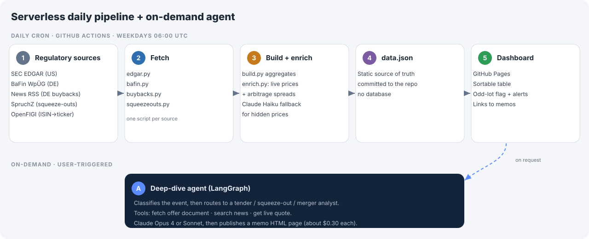

It watches SEC and German regulators every morning, finds special-situation deals, works out the arbitrage spread, and publishes the lot to a dashboard that costs nothing to run.
Every weekday morning it scans SEC EDGAR and a set of German regulatory sources for corporate actions worth a closer look: odd-lot tenders, going-private deals, mergers, delistings and squeeze-outs. For each one it works out the spread between the offer price and the market price, flags the interesting cases, and writes everything to a static dashboard. There is no server, no database and no paid data feed. GitHub Actions runs it on a schedule and GitHub Pages serves the result, so the whole thing costs nothing to keep alive.
Corporate action data is scattered. SEC filings live in EDGAR, German offers sit in the BaFin WpÜG register, and buybacks and squeeze-outs turn up in other places again. None of them talk to each other. To find a tender worth trading you had to check several sources by hand, read the filing to pull out the offer price, then compare it against the live quote yourself.
It was slow and easy to get wrong, and by the time you spotted a deal the window had often narrowed. I wanted one place that did the watching and the arithmetic for me.
A daily job runs on weekdays at 06:00 UTC and fetches from each source with its own small script: edgar.py for SEC filings, bafin.py for the German register, and buybacks.py and squeezeouts.py for the harder German cases. build.py merges them into a single list, and enrich.py attaches a live price and calculates the spread. When a filing hides the offer price in prose, a Claude Haiku call pulls it out as a fallback. The result is written to one data.json that the dashboard reads. Nothing runs between refreshes.

On top of the daily scan there is an on-demand deep-dive agent. When a deal looks worth the effort, I trigger it and it does the reading. It classifies the event, routes to the right analyst logic for a tender, squeeze-out or merger, and uses tools to fetch the offer document, search news and get a live quote. It writes a short risk and reward memo as its own HTML page and links it from the dashboard. It is not part of the daily job on purpose, so the model cost only happens when I ask for it.
GitHub Actions on a schedule, GitHub Pages for the front end. Nothing to pay for or patch, and I can share a result by sending a URL. The cost of that choice is a once-a-day refresh instead of live data, which is fine for deals that play out over weeks.
The deep-dive agent is expensive compared with the scan, so it never runs on the schedule. It only runs when I trigger it. That keeps the model bill to roughly $0.30 per memo instead of an open-ended daily spend.
The SEC offer price comes out of a regex first, and a model only as a fallback. Most filings follow a predictable shape, so paying for an LLM on every row would be wasteful. The trade-off is that odd filings need a manual check, and a spread above about 25% is usually a parsing error rather than free money.
There is no central register for German buybacks, so that source scrapes news instead. It catches more, but the acceptance dates are unreliable and some of it is noise. Partial coverage beat none, so I kept it and marked the weak fields rather than pretending they were solid.
The official German squeeze-out source has no API, so I read the SpruchZ feed as a stand-in for now. The proper central-registry route through Bundesanzeiger is a later phase, kept separate on purpose.
I would rather be honest about where it is rough. SEC offer prices come from pattern-matching, so a few are wrong and show up as implausible spreads. BaFin is a thin source, around a dozen offers a year, and brand-new ones arrive before their documents do. Proper squeeze-outs are not in BaFin at all and wait on a later Bundesanzeiger phase. German buyback acceptance dates are the weakest part, because the sites throttle automated access and the news text is inconsistent.
This is the kind of thing I build for myself: a real problem I actually had, automated end to end, with the boring parts made cheap and the expensive parts made optional. It leans on how I invest and on the engineering to make the data trustworthy. I would rather ship something narrow that works every morning than something broad that needs babysitting.
Special-situations investing · Data pipelines · LLM agents · Serverless automation · Product scoping